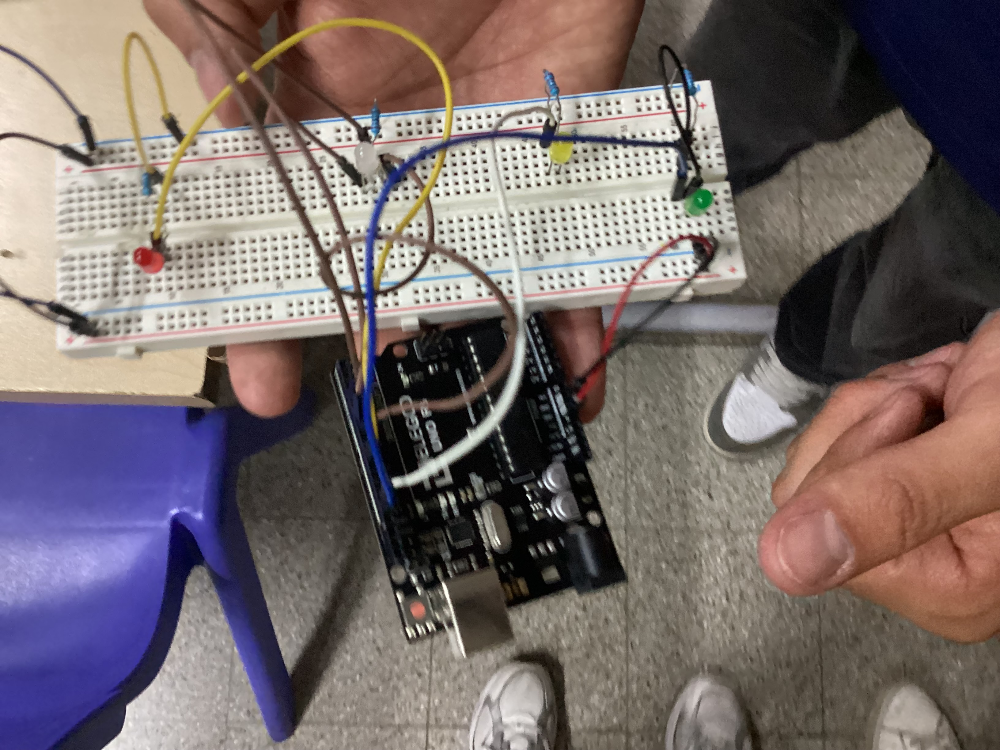

Entrada 1: Introducción
Esta semana aprendimos sobre Arduinos y su importancia en la automatización.
Entrada 2: Práctica en Clase
En esta sesión realizamos la primera conexión física de un LED intermitente utilizando la placa de Arduino y programación básica.
Entrada 3: Práctica con Arduino
Circuito realizado en clase .

Entrada 4: Práctica Arduino, circuito semáforo
Circuito realizado en clase.
Entrada 5:
Circuito de un semaforo el cual se realizo en clase.
Entrada 6: Sensor de distancia a larga distancia
Sensor de distancia realizado en clase, evidencia del trabajo.
Entrada 7: Sensor PIR infrarojos
Sensor Infrarojo realizado en clase.